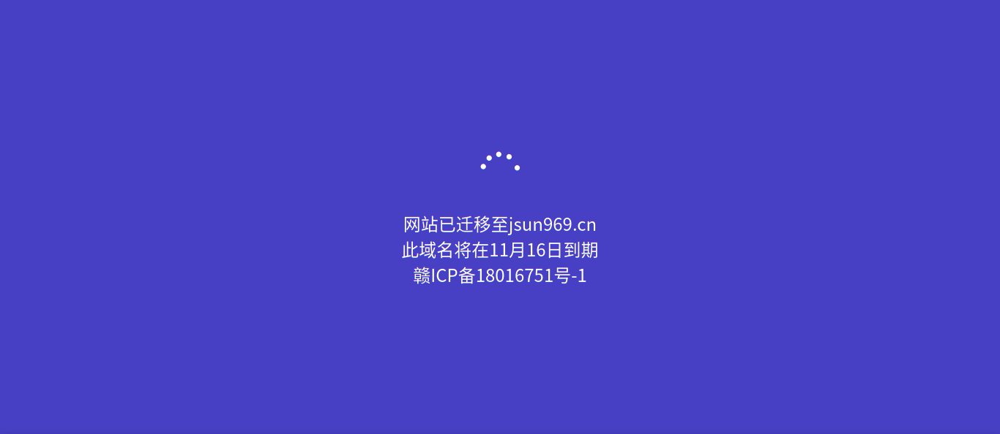
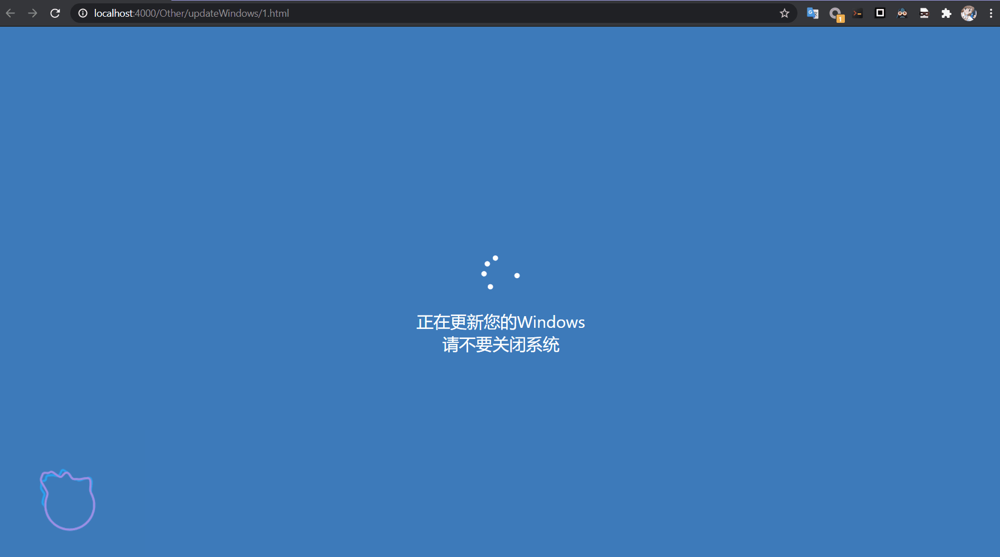

今天逛其他博客，发现了一个很好玩的东西。

第一眼以为我Windows在更新。回过神来，我用的Linux，哪来的更新。。。。。。不得佩服这个作者的脑洞。
这么好的东西，我写不出来，只能白嫖了。所以，F12大法启动，把源代码和转圈的woff文件嫖了过来。
源代码
下面是源代码，记得把woff文件放在同一个目录下
woff文件下载： woff文件
<!DOCTYPE html>
<!-- saved from url=(0018)https://myheod.cn/ -->
<html lang="zh-cn">
<head><meta http-equiv="Content-Type" content="text/html; charset=UTF-8">
<link rel="shortcut icon" href="https://myheod.cn/favicon.ico">
<title>网站已迁移</title>
<style>
@keyframes bgcolor {
/* main code
0% {background-color: #000000; }
10% {background-color: #4080c4; }
20% {background-color: #4040c4; }
30% { background-color: #8040c4; }
40% { background-color: #c44080;}
50% {background-color: #c44040; }
60% { background-color: #c48040; }
70% { background-color: #80c440;}
80% {background-color: #40c440; }
90% { background-color: #40c480; }
100% {background-color: #000000; }
*/
0% {background-color: #000000; }
50% {background-color: #4080c4; }
100% {background-color: #000000; }
}
html {
height: 100%;
}
body {
-webkit-font-smoothing: antialiased;
animation-delay: 0s;
animation-duration: 30s;
animation-iteration-count: infinite;
animation-name: bgcolor;
background-color: #FFFFFF;
color: white;
font-family: "Segoe UI", "Microsoft Yahei UI";
height: 100%;
margin: 0px;
cursor: none; /*禁止鼠标光标*/
/*禁止选中文字*/
-moz-user-select:none; /*火狐*/
-webkit-user-select:none; /*webkit浏览器*/
-ms-user-select:none; /*IE10*/
-khtml-user-select:none; /*早期浏览器*/
user-select:none;
}
@font-face {
font-family: "Windows 8 Boot";
src: url("Win8Boot.woff");
}
.content {
position: absolute;
text-align: center;
top: 50%;
transform: translateY(-50%);
width: 100%;
}
#animation {
font-family: "Windows 8 Boot";
font-size: 32pt;
}
#description {
margin-top: 18pt;
font-size: 18pt;
}
</style>
</head>
<body>
<div class="content">
<div id="animation"></div>
<div id="description">正在更新您的Windows<br>请不要关闭系统</div>
</div>
<script language="javascript">
const firstCode = 0xe052;
const lastCode = 0xe0cc;
const frameRate = 30;
const startTime = new Date()
const updateFrame = () => {
const getCode = () => (new Date()-startTime)*frameRate/1000%(lastCode-firstCode)+firstCode;
document.getElementById("animation").innerText = String.fromCharCode(getCode())
requestAnimationFrame(updateFrame)
}
updateFrame()
</script>
<script type="text/javascript"> /*禁止鼠标右键*/
document.oncontextmenu = function(){
return false;
}
</script>
</body>
</html>效果
在线Demo：
点我

把界面全屏就行了，又可以有借口摸鱼了
其他
woff文件的介绍如下：
woff文件打开方式：
百度还是有些良心的应用woff转tif
其他的实现方法：
纯 HTML/CSS 高仿 Win10 加载动画